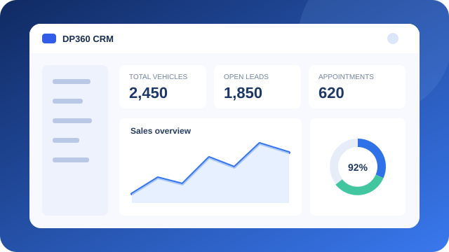
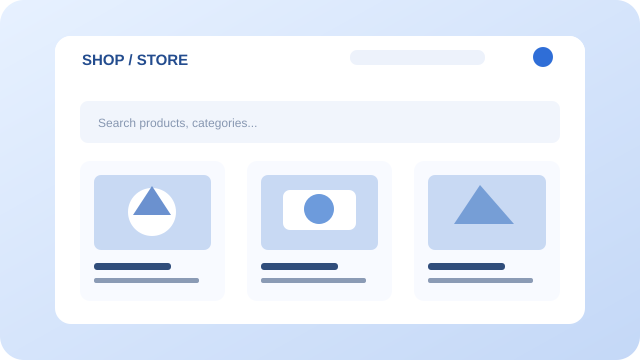

Frontend
Responsive interfaces and application workflows.
Angular 10JavaScriptTypeScriptHTML5CSS3jQuery
SENIOR FULL STACK DEVELOPER
10 YEARS OF BUILDING WEB SOLUTIONS
I'm Gaurav Panchal — a Senior Full Stack Developer with 10 years of experience building web applications, CRM platforms and API-driven solutions.
Currently working at Profilics System Pvt. Ltd. on the DP360 CRM platform, using Angular 10, CakePHP, PHP and MySQL.
01 / ABOUT
I'm a Senior Full Stack Developer with a background in Computer Science & Engineering and 10 years of professional experience in web development.
My work includes CRM development, frontend and backend implementation, REST API integration, debugging and maintaining business applications. I focus on practical problem-solving, maintainable code and delivering solutions that support real business needs.
02 / TOOLKIT
Technologies I use across application development, integrations and everyday engineering workflows.
Responsive interfaces and application workflows.
Server-side functionality and application logic.
Application data and connected services.
Tools for collaboration, source control and delivery.
AI-ASSISTED DEVELOPMENT
I use AI-powered assistants to support code exploration, debugging, code analysis and day-to-day development productivity.
03 / SELECTED WORK
Selected platforms and applications from my professional experience, with DP360 CRM highlighted first.

Dealership Performance CRM supporting process, procedure and accountability across Powersports, Marine, RV, Truck, Trailer, Automotive and Agriculture dealerships. The platform provides user-friendly CRM tools and a 360-degree view of dealership operations.

Real estate platform connecting homebuyers, sellers and agents. Contributed to CRM functionality and role-based access and rights management across HouseJet, NXLead, ISA and Manage components.

Application with user registration and JWT authentication, Admin and Customer roles, product listing with filtering, sorting and search, and CRUD operations for users, products, orders and properties.
Digital services platform intended to improve accessibility, communication, independence and inclusion for deaf or hard-of-hearing people.

Transaction management API supporting workflows such as deposits and withdrawals based on transaction amounts.
Customer review management solution designed to make review collection easier and help businesses manage their online reputation and influence their brand image.
04 / JOURNEY
A career shaped by building and supporting web applications for different business needs.
Ujjain, Madhya Pradesh, India
Working on the DP360 CRM project with Angular 10, CakePHP, PHP, MySQL and related web technologies.
Indore, Madhya Pradesh, India
05 / HOW I WORK
Good software comes from understanding the problem, collaborating well and improving the solution step by step.
Breaking down complex issues and finding practical solutions.
Working with teammates and stakeholders to move work forward.
Taking responsibility for tasks, quality and follow-through.
Adapting to new tools and improving development workflows.
06 / CONTACT
Open to discussing Senior Full Stack Developer opportunities and web application projects.
Email me ↗